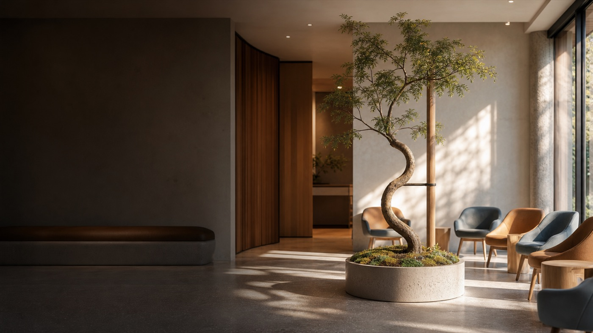

Ik ben patiënt
Lees algemene informatie over voet-, enkel- en knieklachten, sportletsel en artrose, inclusief welke niet-operatieve en operatieve behandelmogelijkheden er zijn.
Lees meer
Orthopedisch chirurg
drs. Matthijs van Dam is orthopedisch chirurg in het Orthopedisch Centrum ETZ te Tilburg, met aandacht voor voet-, enkel- en kniechirurgie, sportletsel en leefstijlgerelateerde gewrichtsklachten, waaronder artrose bij obesitas.
Vanuit die opgebouwde expertise werkt hij ook op projectbasis als zelfstandig adviseur. Daarnaast doet hij onderzoek binnen lopende projecten en houdt hij zich bezig met bredere zorginnovatie, zoals het ontwikkelen en geven van onderwijs, het opleiden van orthopedisch chirurgen in opleiding en digitale toepassingen zoals We Walk.
Deze site is geen patiëntportaal en biedt geen medisch advies op maat.
Lees algemene informatie over voet-, enkel- en knieklachten, sportletsel en artrose, inclusief welke niet-operatieve en operatieve behandelmogelijkheden er zijn.
Lees meerVoor verwijzers en regionale (para)medici die zorginhoudelijk willen afstemmen over voet-, enkel- en knieklachten, beweegzorg, verwijzing en korte lijnen met de orthopedie.
Voor professionalsVoor niet-patiëntgebonden advies, consultancy, onderwijs of projectbijdragen rond orthopedie, leefstijl, digitale ondersteuning en passende zorgontwikkeling.
Advies en consultancyEen selectie van vier voorvoetonderwerpen.
Bekijk alle voorvoetonderwerpenAandoening
Scheefstand van de grote teen met pijn, druk of schoenproblemen. Beoordeling hangt af van klachten, stand, huiddruk en eerdere maatregelen.
Aandoening
Artrose en stijfheid van het grote-teengewricht, vaak met pijn bij afwikkelen of moeite met schoenen.
Aandoening
Teenstandafwijkingen kunnen druk, eelt, wondjes of schoenproblemen geven. De oorzaak en flexibiliteit van de teen zijn belangrijk.
Klacht
Pijn onder de bal van de voet is een beschrijving van een klachtgebied, geen sluitende diagnose.
Aandoening
Zenuwirritatie tussen de middenvoetsbeentjes kan brandende pijn, tintelingen of uitstraling naar de tenen geven.
Letsel
Na een verzwikking kunnen pijn, zwelling en onzekerheid blijven bestaan. Ernst en herstel verschillen per situatie.
Aandoening
Blijvend doorzwikken of onzekerheid na bandletsel vraagt onderscheid tussen kracht, coördinatie, stand en mechanische stabiliteit.
Aandoening
Inklemmingsklachten aan de voorzijde van de enkel kunnen pijn geven bij buigen, sport of hurken.
Aandoening
Pijn achter in de enkel kan optreden bij spitsstand, diepe buiging, dans of sportbelasting.
Enkel
Inklemmingsklachten aan de voorzijde, buitenzijde of achterzijde van de enkel. Bij blijvende klachten kan kijkoperatie of gerichte verwijdering van beknelling worden besproken.
Enkel
Pijn achter in de enkel, vaak bij diepe buiging of sportbelasting. Als rust, aanpassing en therapie onvoldoende helpen, kan operatieve behandeling passend zijn.
Enkel
Artrose van het enkelgewricht met pijn en stijfheid. Bij ernstige beperking kan operatie bestaan uit artrodese of, in geselecteerde situaties, een enkelprothese.
Voet en enkel
Bij ernstige artrose of standsproblemen kan een artrodese pijn verminderen door een pijnlijk gewricht bewust vast te zetten in een functionele stand.
Voet en enkel
Na een breuk in voet of enkel kan later artrose ontstaan. Behandeling vraagt analyse van stand, gewrichtsschade en eerdere operaties.
Enkel
Kraakbeen-botletsel in de enkel kan pijn, zwelling of blokkeren geven. Afhankelijk van grootte en locatie kan behandeling kijkoperatie, stimulatie of reconstructie omvatten.
Achtervoet
Verzakkende voetstand met pijn aan voet of enkel. Operatief kan het gaan om reconstructie, peesverplaatsing, botcorrectie of vastzetten van gewrichten.
Achtervoet
Een hoge voetboog of naar buiten kantelende hiel kan pijn, drukplekken en enkelinstabiliteit geven. Behandeling richt zich op stand, pezen, botcorrectie en belastbaarheid.
Voorvoet
Bij pijnlijke standsafwijkingen kan een operatie gericht zijn op correctie van teenstand of middenvoetsbeentjes, afhankelijk van klacht en voetvorm.
Achtervoet
Als een vastzetoperatie niet vastgroeit, is analyse nodig van botkwaliteit, stand en implantaten. Revisiechirurgie vraagt vaak planning en botopbouw.
Knie
Artrose van de knie met pijn en beperking. Als niet-operatieve zorg onvoldoende helpt, kan een knieprothese worden besproken.
Knie
Kraakbeenletsel in de knie vraagt onderscheid tussen lokaal letsel, standsproblemen en beginnende artrose. Behandeling hangt af van leeftijd, belasting, beeldvorming en klachten.
Knie
Vervanging van een door artrose ernstig aangedaan kniegewricht. De keuze vraagt afweging van pijn, functie, röntgenbeeld, herstelverwachting en voorbereiding.
Knie
Bij knieartrose en obesitas spelen pijn, functie, operatierisico's en voorbereiding samen mee. Het gesprek is gericht op haalbare ondersteuning en passende timing.
Leefstijl
Bewegen hoort vaak bij artrosezorg, ook wanneer operatie later nodig wordt. Kracht en conditie kunnen herstel en besluitvorming ondersteunen.
Leefstijl
Gewicht kan invloed hebben op pijn, belasting en operatierisico's. Dit vraagt een respectvol gesprek over ondersteuning, belastbaarheid en timing.
Er staan nog geen onderwerpen bij dit filter.
Vakgroep Orthopedie
drs. Matthijs van Dam is onderdeel van de vakgroep Orthopedie binnen het Orthopedisch Centrum ETZ. Binnen deze vakgroep kunnen patiënten terecht voor het volledige spectrum van orthopedische klachten: van aandoeningen van botten, gewrichten, spieren, pezen en banden tot voet-, enkel-, knie-, heup-, schouder-, hand- en wervelkolomzorg.
De vakgroep draait mee in belangrijke pijlers van het ETZ, zoals traumazorg, wervelkolomzorg, oncologische zorg en passende zorg.
Daarnaast draagt de vakgroep bij aan opleiding en kennisontwikkeling. Binnen het Orthopedisch Centrum ETZ worden orthopedisch chirurgen en andere zorgverleners opgeleid, en wordt wetenschappelijk onderzoek gedaan met ondersteuning van een eigen onderzoeksbureau binnen het ETZ.
Meer over orthopedie in het ETZ
Een selectie van projecten uit de praktijk in Tilburg en daarbuiten, op het snijvlak van orthopedie, leefstijl, onderzoek, onderwijs en digitale zorgontwikkeling.
Gosens T, van Dam MJJ, Korst J, Maas L, Aarnoudse G. Nederlands Tijdschrift voor Geneeskunde. 2026;170:D8889. PMID: 41810568.
Dit artikel beschrijft waarom artrosezorg meer vraagt dan alleen opereren wanneer klachten ernstig worden. Gestructureerde uitleg, oefentherapie, leefstijlondersteuning en regionale samenwerking kunnen helpen om mensen langer mobiel te houden en soms een operatie uit te stellen.
De praktische boodschap: artrosezorg moet beter georganiseerd worden rond de patiënt, met een duidelijke rol voor huisarts, fysiotherapeut, leefstijlbegeleiding en orthopedie.
Bekijk op PubMedVan Dam M. Een prik of een preek? Medisch Contact. 1 mei 2025.
In deze praktijkbijdrage beschrijft drs. van Dam de spanning tussen wat patiënten verwachten van orthopedische zorg en wat goede artrosezorg soms ook vraagt: een gesprek over leefstijl, gewicht, bewegen en haalbare ondersteuning.
De kern: leefstijlbegeleiding hoort niet als oordeel of preek te voelen, maar kan wel een vanzelfsprekend onderdeel zijn van een orthopedisch zorgpad wanneer obesitas en artrose elkaar versterken.
Lees bij Medisch Contactvan Es LJM, van Dam MJJ, de Wit BWK, Aaftink JFA, Benner JL, Kerkhoffs GMMJ, Burger BJ, Tsuchida AI. Journal of Foot and Ankle Surgery. 2026. DOI: 10.1053/j.jfas.2025.10.013. PMID: 41223927.
Bij een totale enkelprothese wordt gekeken hoe de prothese ten opzichte van het scheenbeen wordt geplaatst. Deze studie onderzocht of het behouden van de natuurlijke hoek van het onderste scheenbeen invloed heeft op de overleving van de enkelprothese.
De kern: in deze groep werd geen duidelijk negatief effect gevonden van het behouden van de natuurlijke stand op de overleving van de prothese. Dat helpt bij het nadenken over maatwerk in enkelprothesechirurgie.
Bekijk op PubMedDe juiste route hangt af van je vraag. Deze website is geen patiëntportaal en is niet bedoeld voor medische vragen over persoonlijke situaties, afspraken of lopende zorg.
Voor afspraken, verwijzingen, uitslagen, praktische ziekenhuisinformatie en vragen over lopende zorg zijn de officiële ETZ-kanalen de juiste route. Bij nieuwe of niet-acute klachten begint de route meestal bij de huisarts.
Voor algemene informatie over orthopedie in het ETZ kun je terecht bij de polikliniek Orthopedie van het ETZ. drs. van Dam werkt op locatie ETZ TweeSteden en ETZ Elisabeth.
Controleer actuele contact-, locatie- en route-informatie altijd op etz.nl; officiële ETZ-informatie is leidend.
Hilvarenbeekseweg 60
5022 GC Tilburg
Route 47
Dr. Deelenlaan 5
5042 AD Tilburg
Route 73
De kaart wordt niet automatisch geladen. Zo blijft deze pagina vrij van externe kaartcookies of tracking voordat je zelf een route opent.
Open route in Google MapsVoor verwijzers en regionale (para)medici is er een aparte pagina over korte lijnen, samenwerking rond beweegzorg en professionele afstemming.
Deel via deze website geen medische gegevens, foto's, verwijsbrieven of vragen over lopende patiëntenzorg. Gebruik daarvoor de officiële zorgkanalen.
Naar de pagina voor professionalsVoor advies op projectbasis, presentaties, onderwijs, dagvoorzitterschap of zorgontwikkeling is er een aparte adviespagina. Dit gaat niet over persoonlijke medische vragen of lopende patiëntenzorg.
Naar advies en consultancyVoor een eerste vraag over advies, consultancy of projectontwikkeling kan per e-mail contact worden opgenomen. Gebruik deze route niet voor patiëntvragen of afspraken.
De informatie op deze website is algemeen van aard. De inhoud vervangt geen consult, diagnose of behandeladvies van een arts. Gebruik voor medische vragen, afspraken of spoed altijd de officiële zorgkanalen.